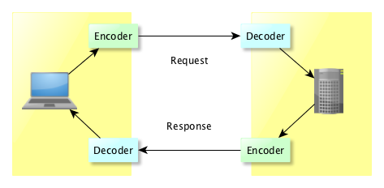
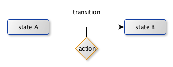

LDAP API
Downloads
Getting Started
Documentation
- Five minute tutorial
- User Guide
- API 1 to 2 migration
- JavaDocs
- JavaDocs 2
- Cross-Reference
- Cross-Reference 2
- Developer Guide
- Internal Guide
Support
Community
About Apache
4 - ASN/1
To be completed…
The LDAP protocol is based on an ASN/1 description. We will notexplain in detail what is ASN/1 about, you would rather check This page for a very limited introduction, or if you feel teh need to understand what is ASN/1 in detail, just read the Olivier Dubuisson’s book on ASN.1 (This is probably the best reference !)
Anyway, we use a subset of ASN/1, as what we have to deal with is the BER/DER encoding. (BER or DER stands for Basic Encoding Rule and Distinguished Encoding Rule. There are other possible encoding, like PER, XER, CER, but they are irrelevant for LDAP)
What is needed to know is that ASN/1 is just a notation used to describe the messages being exchanged between a client and a server, and in order to use it, we need an encoder and a decoder on both sides :

ASN/1 implementation in Apache LDAP API
It took a long time to get it right ! And it’s not perfect :-)
The very first iteration was using a proprietary library (IBM SNACC), but that was before ApacheDS became a TLP ! The next iteration was based on a rewriting system, which was pretty slow. Then came Snicker, a State Machine based decoder, which is currently what we use. We might change for a faster implementation, like what Kerby is using…
ASN/1 messages
Let’s start with the basic information.
An encoded ASN/1 message is a tuple contianing two or three elements : a Type, a Length and optionally - ie if the length is not 0 - a Value. This tuple is called a TLV. Every message is a TLV.
But a message can be have complex structure, so a TLV itself can encapsulate some TLVs. Actually the V part can be a list of TLVs. This is recursive…
A typical encoded message can therefore represented this way :
[TL [TLV] [TL [TLV] [TLV]]]
Here, the message TLV value is a set of two TLVs, teh second one being itself a composition of 2 TLVs.
The T describe the type of value, the L gives the length of this value (can be 0) and of course the V is the value, which can itself be a TLV.
Encoder/Decoder
There are two aspects we have to deal with :
- encoding messages
- decoding messages
Those are two different things, and we don’t use the same mechanism. Encoding is done using a State Machine, and Decoding which is hard wired in each class implementing a message.
As we said, it’s not perfect, first because it’s complex to implement, complex to add a new message, and complex to test. We don’t have a compiler that generates the stubs to encode or decode messages.
Decoder
The Decoder work is to take a byte[] and transform it into an instance of a jave object. When we receive the byte[], we don’t know yet what kind of message we are dealing with, so the creation of the instance is differed.
We have built a generic decoder that takes some imputs and produces the result, based on those elements :
- A Grammar
- A Container
- A StateEnum
- A Decorator
- and optionally a Factory
The Grammar describes the transitions and actions of the state machine used to decode a message. Note that the actions can be stored in separate classes.
The Container is a wrapper around a message that is fed by the State Machine and that will contain the Java instance once fully decoded. It’s initally empty.
The StateEnum is a Java enumeration listing all the possible Grammar states.
The Decorator is a wrapper used to store a decoded message.
The Factory is used to create the message instance (it’s optional)
And of course, you have the messsage class that will be created and stored in the Decorator
So what we have is based on a State Engine, which means you have to describe
Encoder
It’s slightly simpler : we use the Decorator to implement the encoding of a message. Two methods are necessary :
- int computeLength() : compute the ByteBuffer size necessary to stored the encoded message
- ByteBuffer encode( ByteBuffer ) : actually encode the message into a ByteBuffer
The state machine
So we decode a message using a state machine, which basically transit from one state to another, and optionally execute an action in between :

Now, let’s see a real example.